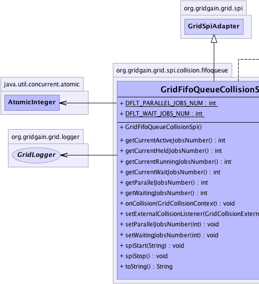
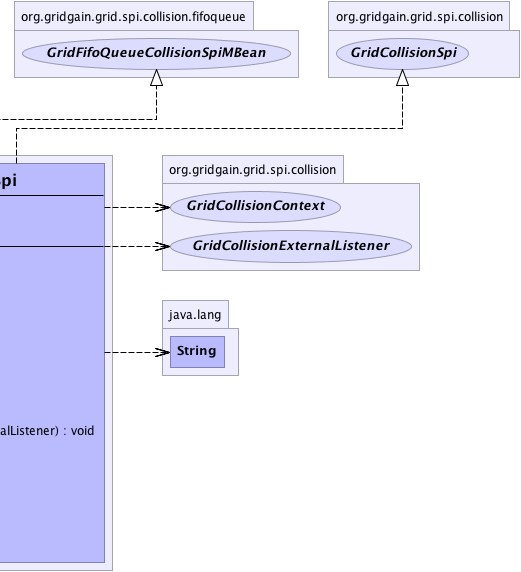

org.gridgain.grid.spi.GridSpiAdapter
org.gridgain.grid.spi.collision.fifoqueue.GridFifoQueueCollisionSpi
org.gridgain.grid.spi.GridSpiAdapter
org.gridgain.grid.spi.collision.fifoqueue.GridFifoQueueCollisionSpi
|
GridGain™ 3.6.0c
Community Edition |
|||||||||
| PREV CLASS NEXT CLASS | FRAMES NO FRAMES | |||||||||
| SUMMARY: NESTED | FIELD | CONSTR | METHOD | DETAIL: FIELD | CONSTR | METHOD | |||||||||
java.lang.Object
@GridSpiInfo(author="GridGain Systems",
url="www.gridgain.com",
email="support@gridgain.com",
version="3.6.0c.13012012")
@GridSpiMultipleInstancesSupport(value=true)
public class GridFifoQueueCollisionSpi
This class provides implementation for Collision SPI based on FIFO queue. Jobs are ordered
as they arrived and only GridFifoQueueCollisionSpi.getParallelJobsNumber() number of jobs is allowed to
execute in parallel. Other jobs will be buffered in the passive queue.
GridFifoQueueCollisionSpi.setParallelJobsNumber(int)).
This number should usually be set to the number of threads in the execution thread pool.
GridFifoQueueCollisionSpi can be configured as follows:
GridFifoQueueCollisionSpi colSpi = new GridFifoQueueCollisionSpi(); // Execute all jobs sequentially by setting parallel job number to 1. colSpi.setParallelJobsNumber(1); GridConfigurationAdapter cfg = new GridConfigurationAdapter(); // Override default collision SPI. cfg.setCollisionSpi(colSpi); // Starts grid. G.start(cfg);
GridFifoQueueCollisionSpi can be configured from Spring XML configuration file:
<bean id="grid.custom.cfg" class="org.gridgain.grid.GridConfigurationAdapter" singleton="true">
...
<property name="collisionSpi">
<bean class="org.gridgain.grid.spi.collision.fifoqueue.GridFifoQueueCollisionSpi">
<property name="parallelJobsNumber" value="1"/>
</bean>
</property>
...
</bean>
| Wiki | |
| Forum |
|  |  |
| Field Summary | |
|---|---|
static int |
DFLT_PARALLEL_JOBS_NUM
Default number of parallel jobs allowed (value is 95 which is
slightly less same as default value of threads in the execution thread pool
to allow some extra threads for system processing). |
static int |
DFLT_WAIT_JOBS_NUM
Default waiting jobs number. |
| Constructor Summary | |
|---|---|
GridFifoQueueCollisionSpi()
|
|
| Method Summary | |
|---|---|
int |
getCurrentActiveJobsNumber()
Gets current number of jobs that are active, i.e. |
int |
getCurrentHeldJobsNumber()
Gets number of currently 'held' jobs. |
int |
getCurrentRunningJobsNumber()
|
int |
getCurrentWaitJobsNumber()
Gets current number of jobs that wait for the execution. |
int |
getParallelJobsNumber()
Gets number of jobs that can be executed in parallel. |
int |
getWaitingJobsNumber()
Maximum number of jobs that are allowed to wait in waiting queue. |
void |
onCollision(GridCollisionContext ctx)
This is a callback called when either new grid job arrived or executing job finished its execution. |
void |
setExternalCollisionListener(GridCollisionExternalListener lsnr)
Listener to be set for notification of external collision events (e.g. job stealing). |
void |
setParallelJobsNumber(int parallelJobsNum)
Sets number of jobs that are allowed to be executed in parallel on this node. |
void |
setWaitingJobsNumber(int waitJobsNum)
Sets maximum number of jobs that are allowed to wait in waiting queue. |
void |
spiStart(String gridName)
This method is called to start SPI. |
void |
spiStop()
This method is called to stop SPI. |
String |
toString()
|
| Methods inherited from class org.gridgain.grid.spi.GridSpiAdapter |
|---|
assertParameter, checkConfigurationConsistency, configInfo, createSpiAttributeName, getAuthor, getConsistentAttributeNames, getGridGainHome, getLocalNodeId, getName, getNodeAttributes, getSpiContext, getStartTimestamp, getStartTimestampFormatted, getUpTime, getUpTimeFormatted, getVendorEmail, getVendorUrl, getVersion, injectables, onContextDestroyed, onContextInitialized, registerMBean, setJson, setName, startInfo, startStopwatch, stopInfo, unregisterMBean |
| Methods inherited from class java.lang.Object |
|---|
clone, equals, finalize, getClass, hashCode, notify, notifyAll, wait, wait, wait |
| Methods inherited from interface org.gridgain.grid.spi.GridSpi |
|---|
getName, getNodeAttributes, onContextDestroyed, onContextInitialized |
| Methods inherited from interface org.gridgain.grid.spi.GridSpiJsonConfigurable |
|---|
setJson |
| Methods inherited from interface org.gridgain.grid.spi.GridSpiManagementMBean |
|---|
getAuthor, getGridGainHome, getLocalNodeId, getName, getStartTimestamp, getStartTimestampFormatted, getUpTime, getUpTimeFormatted, getVendorEmail, getVendorUrl, getVersion |
| Field Detail |
|---|
public static final int DFLT_PARALLEL_JOBS_NUM
95 which is
slightly less same as default value of threads in the execution thread pool
to allow some extra threads for system processing).
public static final int DFLT_WAIT_JOBS_NUM
Integer.MAX_VALUE.
| Constructor Detail |
|---|
public GridFifoQueueCollisionSpi()
| Method Detail |
|---|
@GridSpiConfiguration(optional=true) public void setParallelJobsNumber(int parallelJobsNum)
{@link #DFLT_PARALLEL_JOBS_NUM}.
parallelJobsNum - Maximum number of jobs to be executed in parallel.public int getParallelJobsNumber()
getParallelJobsNumber in interface GridFifoQueueCollisionSpiMBean@GridSpiConfiguration(optional=true) public void setWaitingJobsNumber(int waitJobsNum)
GridFifoQueueCollisionSpi.DFLT_WAIT_JOBS_NUM constant.
waitJobsNum - Maximum waiting jobs number.public int getWaitingJobsNumber()
getWaitingJobsNumber in interface GridFifoQueueCollisionSpiMBeanpublic int getCurrentWaitJobsNumber()
getCurrentWaitJobsNumber in interface GridFifoQueueCollisionSpiMBeanpublic int getCurrentActiveJobsNumber()
'running + held' jobs.
getCurrentActiveJobsNumber in interface GridFifoQueueCollisionSpiMBeanpublic int getCurrentRunningJobsNumber()
getCurrentRunningJobsNumber in interface GridFifoQueueCollisionSpiMBeanpublic int getCurrentHeldJobsNumber()
'held' jobs.
getCurrentHeldJobsNumber in interface GridFifoQueueCollisionSpiMBean'held' jobs.
public void spiStart(String gridName)
throws GridSpiException
spiStart in interface GridSpiGridSpiException - Throws in case of any error during SPI start.gridName - Name of grid instance this SPI is being started for
(null for default grid).
public void spiStop()
throws GridSpiException
Note that this method can be called at any point including during recovery of failed start. It should make no assumptions on what state SPI will be in when this method is called.
spiStop in interface GridSpiGridSpiException - Thrown in case of any error during SPI stop.public void setExternalCollisionListener(GridCollisionExternalListener lsnr)
GridGain uses this listener to enable job stealing from overloaded to underloaded nodes.
However, you can also utilize it, for instance, to provide time based collision
resolution. To achieve this, you most likely would mark some job by setting a certain
attribute in job context (see GridJobContext) for a job that requires
time-based scheduling and set some timer in your SPI implementation that would wake up
after a certain period of time. Once this period is reached, you would notify this
listener that a collision resolution should take place. Then inside of your collision
resolution logic, you would find the marked waiting job and activate it.
Note that most collision SPI's might not have external collisions. In that case, they should simply ignore this method and do nothing when listener is set.
setExternalCollisionListener in interface GridCollisionSpilsnr - Listener for external collision events.public void onCollision(GridCollisionContext ctx)
Implementation of this method should act on all lists, each of which contains collision
job contexts that define a set of operations available during collision resolution. Refer
to GridCollisionContext and GridCollisionJobContext documentation for
more information.
onCollision in interface GridCollisionSpictx - Collision context which contains all collision lists.public String toString()
toString in class Object
|
GridGain™ 3.6.0c
Community Edition |
|||||||||
| PREV CLASS NEXT CLASS | FRAMES NO FRAMES | |||||||||
| SUMMARY: NESTED | FIELD | CONSTR | METHOD | DETAIL: FIELD | CONSTR | METHOD | |||||||||
|
GridGain - Real Time Big Data
|
|

|
|